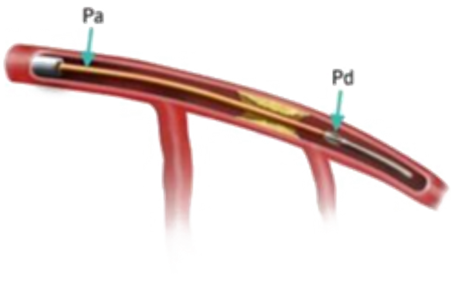

Zhifan Gao
Computer Vision and Machine Learning

|

|
|
| Saliency Detection | Federated Learning | Weakly-supervised Learning |
Blood Vessel Segmentation and Detection
| Artery Plaque Segmentation | Vessel Detection | Carotid Segmentation and Motion Tracking |
Cardiac Image Analysis
 |
|||
| Heart Chamber Segmentation | Myocardial Infarction Recognition | Myocardial Scar Detection | Cardiac Function Quantification |
Blood Flow Perception and Computation
 |
 | |
| Physics Informed Neural Network | Computational Fluid Dynamics | Fractional Flow Reserve |